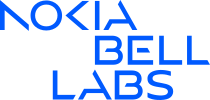

About Me
I am a Ph.D. Candidate at the David R. Cheriton School of Computer Science, University of Waterloo (expected completion: Winter 2027). I am fortunate to work with Professor Raouf Boutaba (supervisor), Professor Mina Tahmasbi Arashloo, and Professor Bo Sun. My Ph.D. research lies at the intersection of reinforcement learning, multi-agent decision-making, verifying learning-augmented systems, and AI-driven optimization in networked systems.
Alongside my doctoral research, which has included an NSERC/MITACS collaboration with Rogers Communications, I have worked in industry research labs as a Research Intern at Huawei Cloud R&D (Markham, Canada) on post-training small language model judges and enterprise data agents, and at Nokia Bell Labs (Paris, France) on graph neural multi-agent reinforcement learning.
Prior to joining Waterloo, I received my B.Sc. in Electrical Engineering with a minor in Computer Science from Sharif University of Technology (Tehran, Iran).
Experience
- Proposed judge LLM fine-tuning with counterfactual pairwise augmentation, outperforming multi-expert model merging across evaluation criteria.
- Research Focus: Multi-Agent Decision-Making, Verifying Learning-Augmented Systems, and Learning-Driven Optimization in Networked Systems.

- Proposed a Graph Neural Network (GNN)-based multi-agent RL framework for distributed wireless connectivity management, improving SLA satisfaction by 40%.
- Developed large-scale Apache Spark data pipelines to analyze rider and driver experience across 25M riders and 1M drivers.
- Designed and deployed A/B testing frameworks to evaluate marketplace pricing and dispatch product features.
- GPA: 18.71 / 20 · Ranked 15th among 162 students in the cohort.
Publications
Full citation metrics are available on Google Scholar.
-
NeurIPS WS ’26
Counterfactual Pairwise Augmentation Improves Small Pointwise LLM Judges
NeurIPS Workshop on Small Language Models (SLMs) for Agentic Systems, 2026
-
ACM SIGMETRICS ’26
Analyzing Symbolic Properties for DRL Agents in Systems and Networking
ACM SIGMETRICS, 2026
-
IEEE NOMS ’26
HyRA: A Hybrid Resource Allocation Framework for RAN Slicing based on Bi-level Stochastic Optimization
IEEE/IFIP Network Operations and Management Symposium (NOMS), 2026
-
Preprint ’26
Graph-Neural Multi-Agent Coordination for Distributed Access-Point Selection in Cell-Free Massive MIMO
arXiv Preprint (Under Review), 2026
-
IEEE JSAC ’24
Flexible RAN Slicing in Open RAN with Constrained Multi-Agent Reinforcement Learning
IEEE Journal on Selected Areas in Communications (JSAC), 2024
-
IEEE NOMS ’24
Evaluating Open-Source 5G SA Testbeds: Unveiling Performance Disparities in RAN Scenarios
IEEE/IFIP Network Operations and Management Symposium (NOMS), 2024
-
ICML WS ’23
Towards Verifying Monotonicity and Robustness Properties for Domain-Specific DRL Algorithms
ICML Workshop on Formal Verification of Machine Learning, 2023
-
CommMag ’23
Reinforcement Learning for Radio Resource Management in RAN Slicing: A Survey
IEEE Communications Magazine, 2023
-
CommMag ’23
Deep Reinforcement Learning Approaches to Network Slice Scaling and Placement: A Survey
IEEE Communications Magazine, 2023